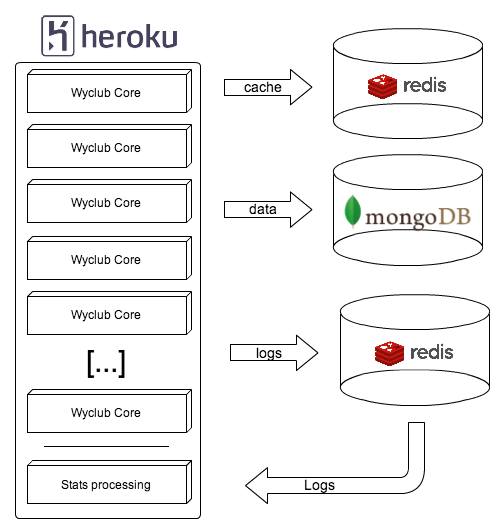
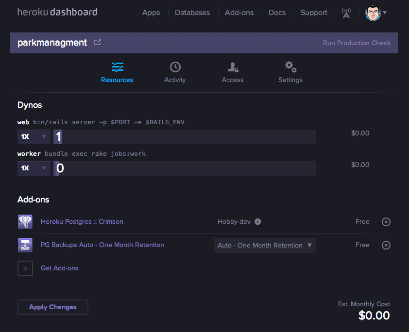
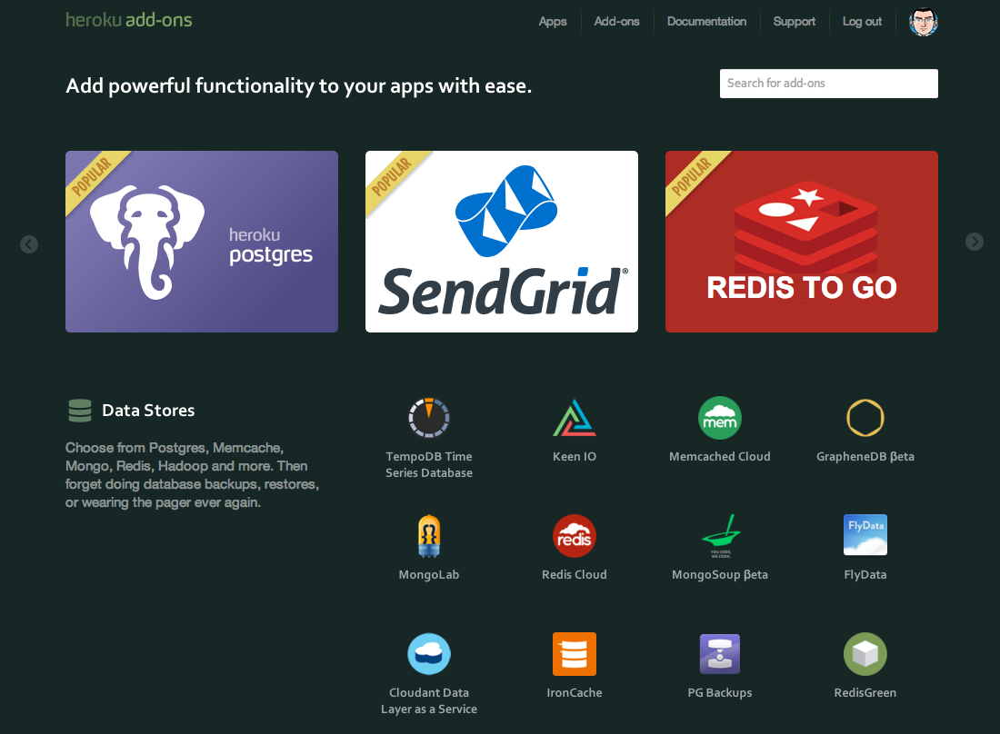
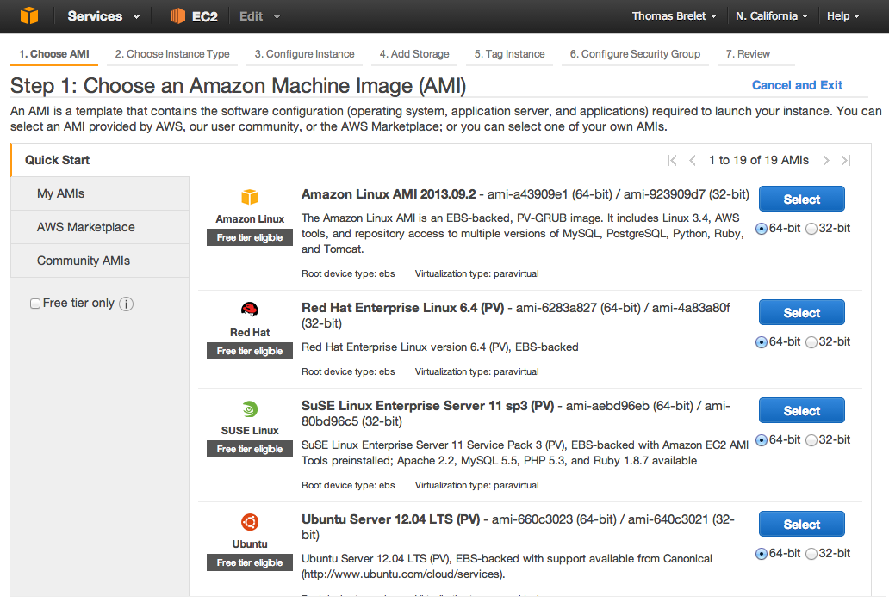
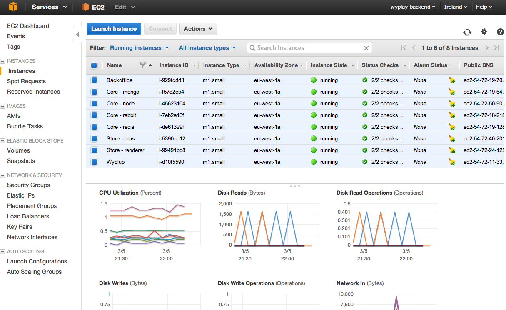
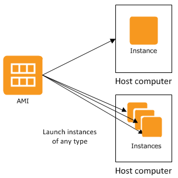
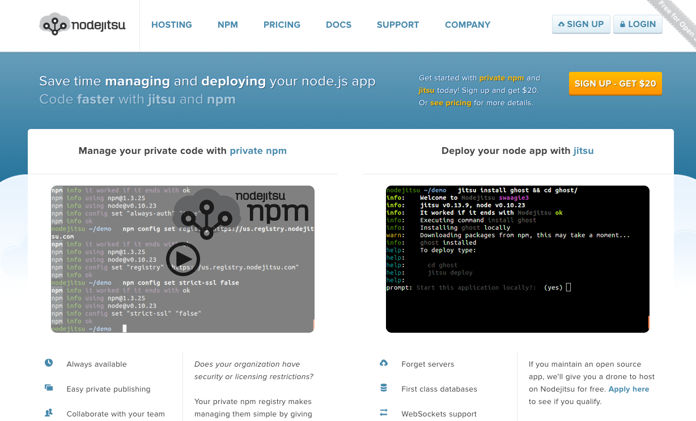

Node dans les nuages
Hébergement et scalabilité
Sommaire
- Hébergement
- Heroku
- Amazon Web Services
- Scalabilité
Exemple d'application
Heroku
Déploiement
Heroku Toolbelt
$ heroku login
Création du projet
$ npm init
$ npm install express --save
$ git init
$ git add .
$ git commit -m "init"
Création de l'application
heroku create
Procfile
web: node server.js
Deploiement
$ git commit -m "ajout conf"
$ git push heroku master
$ heroku ps:scale web=1
Applications
Add-ons
Amazon Web Services
Création de la VM
Gestion des VM
Système d'AMI
Et les autres ?
Nodejitsu
OVH

Tests de Scalabilité
Heroku
~ 3000 Hits/secondes
Amazon Web Service
???